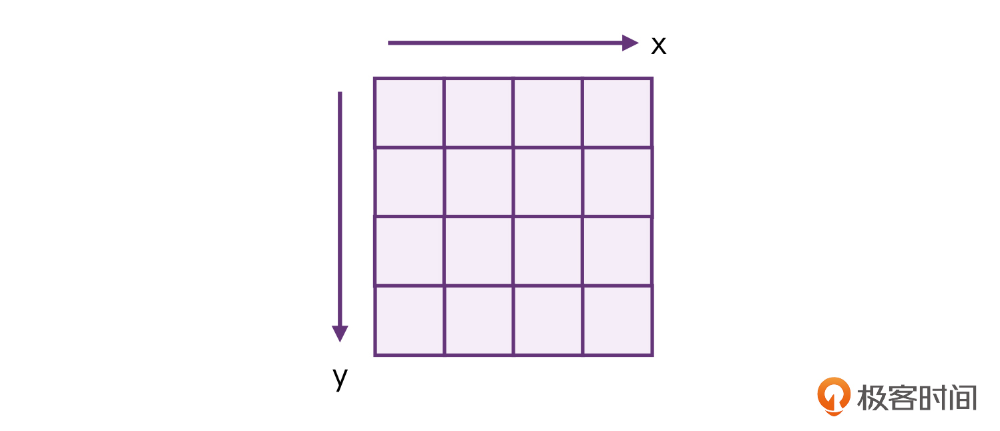
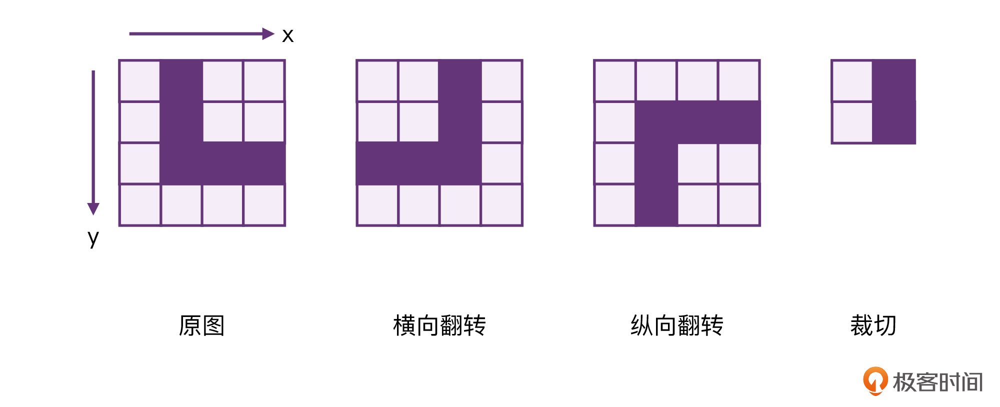
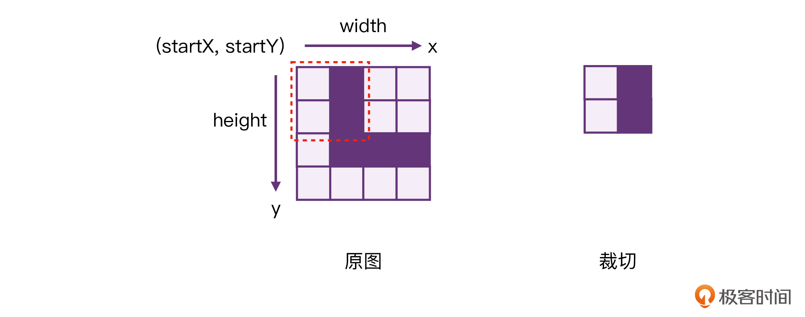
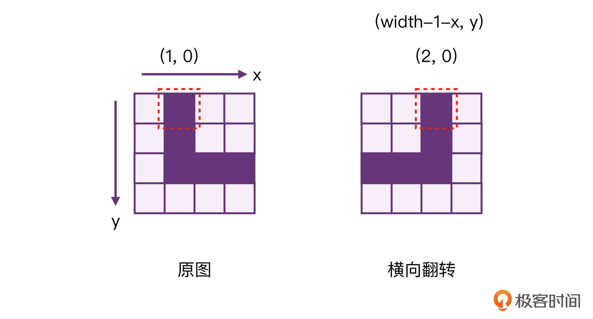
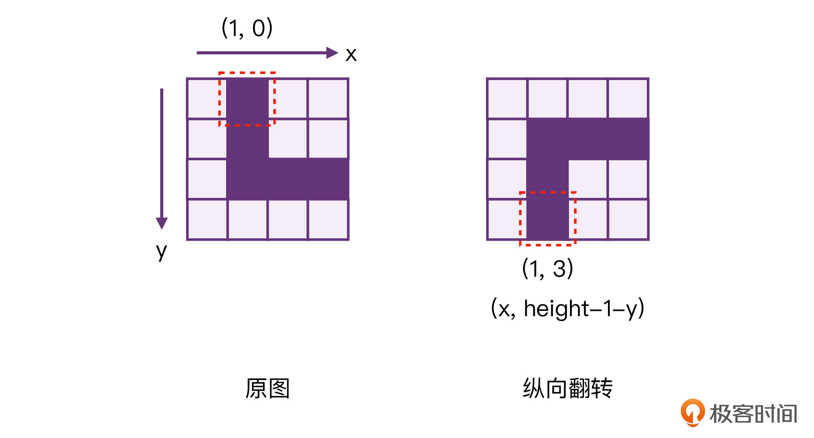
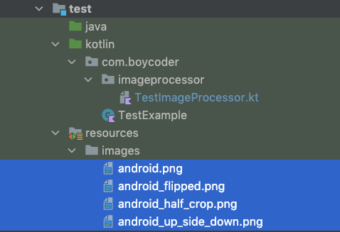
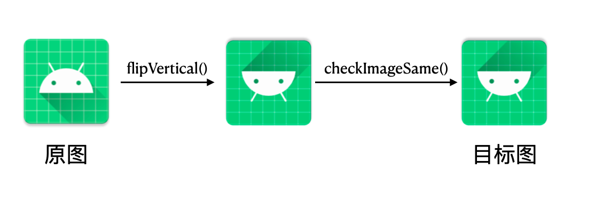

Audio题目解答丨期中考试版本参考实现
你好，我是朱涛。上节课我给你布置了一份考试题，你完成得怎么样了呢？这节课呢，我会来告诉你我是如何用 Kotlin 来做这个图片处理程序的，供你参考。
由于上节课我们已经做好了前期准备，所以这里我们直接写代码就行了。
1.0 版本
对于图片反转和裁切的这个问题，如果一开始你就去想象一个大图片，里面有几万个像素点，那你可能会被吓到。但是，如果你将数据规模缩小，再来分析的话，你会发现这个问题其实很简单。
这里，我们就以一张 4X4 像素的照片为例来分析一下。

这其实就相当于一个抽象的模型，如果我们基于这张 4X4 的照片，继续分析翻转和裁切，就会容易很多。我们可以来画一个简单的图形：

上面这张图，从左到右分别是原图、横向翻转、纵向翻转、裁切。其中，翻转看起来是要复杂一些，而裁切是最简单的。

我们先来处理裁切。对于裁切，其实只需要将图片当中某个部分的像素拷贝到内存，然后存储成为一张新图片就行了。
/**
* 图片裁切
*/
fun Image.crop(startY: Int, startX: Int, width: Int, height: Int): Image {
val pixels = Array(height) { y ->
Array(width) { x ->
getPixel(startY + y, startX + x)
}
}
return Image(pixels)
}以上代码中，我们创建了一个新数组 pixels，它的创建方式是通过 Lambda 来实现的，而 Lambda 当中最关键的逻辑，就是 getPixel(startY + y, startX + x)，也就是从原图当中取像素点。
这代码是不是比你想象中简单很多？其实，图片的翻转也是一样的。只要我们能找出坐标的对应关系，代码也非常简单。

可以看到，对于原图的 (1, 0) 这个像素点来说，它横向翻转以后就变成了 (2, 0)。所以，对于 (x, y) 坐标来说，横向翻转以后，就应该变成 (width-1-x, y)。找到这个对应关系以后，我们就直接抄代码了！
/**
* 横向翻转图片
*/
fun Image.flipHorizontal(): Image {
val pixels = Array(height()) { y ->
Array(width()) { x ->
getPixel(y, width() - 1 - x)
}
}
return Image(pixels)
}可见，以上这段代码几乎跟裁切是一模一样的，只是说，裁切要限制宽高，而翻转则是跟原图保持一致。
看到这里，相信你也马上就能想明白纵向翻转的代码该如何写了！

我们还是以 (1, 0) 这个像素点为例，在纵向翻转以后就变成了 (1, 3)，它们的转换规则是 (x, height-1-y)。
/**
* 纵向翻转图片
*/
fun Image.flipVertical(): Image {
val pixels = Array(height()) { y ->
Array(width()) { x ->
getPixel(height() - 1 - y, x) // 改动这里
}
}
return Image(pixels)
}所以说，只要我们能找到中间的转换关系，纵向翻转的代码，只需要在横向翻转的基础上，改动一行即可。
单元测试
其实针对图像算法的单元测试，我们最好的方式，就是准备一些现有的图片案例。比如说，我们随便找一张图，用其他的软件工具，对它进行翻转、裁切，然后存储起来。比如还是这四张图：
我们可以把处理后的图片保存在单元测试的文件夹下，方便我们写对应的测试用例。

那么，有了这些图片之后，我想你应该就能想到要怎么办了。这时候，你只需要写一个图片像素对比的方法 checkImageSame() 就好办了。
private fun checkImageSame(picture: Image, expected: Image) {
assertEquals(picture.height(), expected.height())
assertEquals(picture.width(), expected.width())
for (row in 0 until picture.height()) {
for (column in 0 until picture.width()) {
val actualPixel = picture.getPixel(row, column)
val expectedPixel = expected.getPixel(row, column)
assertEquals(actualPixel, expectedPixel)
}
}
}其实，这个函数的思路也很简单，就是逐个对比两张图片之间的像素，看看它们是不是一样的，如果两张图所有的像素都一样，那肯定就是一样的。
有了这个方法以后，我们就可以快速实现单元测试代码了。整体流程大致如下：

@Test
fun testCrop() {
val image = loadImage(File("${TEST_BASE_PATH}android.png"))
val height = image.height() / 2
val width = image.width() / 2
val target = loadImage(File("${TEST_BASE_PATH}android_half_crop.png"))
val crop = image.crop(0, 0, width, height)
checkImageSame(crop, target)
}
@Test
fun testFlipVertical() {
val origin = loadImage(File("${TEST_BASE_PATH}android.png"))
val target = loadImage(File("${TEST_BASE_PATH}android_up_side_down.png"))
val flipped = origin.flipVertical()
checkImageSame(flipped, target)
}
@Test
fun testFlipHorizontal() {
val origin = loadImage(File("${TEST_BASE_PATH}android.png"))
val target = loadImage(File("${TEST_BASE_PATH}android_flipped.png"))
val flipped = origin.flipHorizontal()
checkImageSame(flipped, target)
}有了单元测试，我们就再也不用担心以后改代码的时候，不小心改出问题了。
好，那么到这里，1.0 版本就算是完成了。我们接着来看看 2.0 版本。
2.0 版本
2.0 版本的任务，我们需要支持下载网络上面的图片，并且还要能够存起来。由于这是一个比较耗时的操作，我们希望它是一个挂起函数。
关于下载 HTTP 的图片，其实，我们借助 OkHttp 就可以简单实现。下面我们来看看代码。
补充：为了不偏离主题，我们不考虑 HTTPS 的问题。
fun downloadSync() {
logX("Download start!")
val okHttpClient = OkHttpClient().newBuilder()
.connectTimeout(10L, TimeUnit.SECONDS)
.readTimeout(10L, TimeUnit.SECONDS)
.build()
val request = Request.Builder().url(url).build()
val response = okHttpClient.newCall(request).execute()
val body = response.body
val responseCode = response.code
if (responseCode >= HttpURLConnection.HTTP_OK &&
responseCode < HttpURLConnection.HTTP_MULT_CHOICE &&
body != null
) {
// 1， 注意这里
body.byteStream().apply {
outputFile.outputStream().use { fileOut ->
copyTo(fileOut)
}
}
}
logX("Download finish!")
}以上代码中，有一个地方是需要注意的，我用注释标记了。也就是当我们想要把网络流中的数据存起来的时候，我们可以借助 Kotlin 提供的 IO 扩展函数快速实现，这样不仅方便，而且还不用担心 FileOutputStream 调用 close() 的问题。这个部分的代码，在 Java 当中，是要写一堆模板代码的。
下载本身的功能实现以后，挂起函数的封装也就容易了。
suspend fun downloadImage(url: String, outputFile: File): Boolean {
return withContext(Dispatchers.IO) {
try {
downloadSync()
} catch (e: Exception) {
println(e)
// return@withContext 不可省略
return@withContext false
}
// return@withContext 可省略
return@withContext true
}
}这里，我们可以直接用 withContext，让下载的任务直接分发到 IO 线程。
代码写到这里，2.0 版本要求的功能基本上就算是完成了。这样一来，我们就可以在 main 函数当中去调用它了。
fun main() = runBlocking {
val url = "http://xxxx.jpg"
val path = "${BASE_PATH}downloaded.png"
downloadImage(url, File(path))
loadImage(File(path))
.flipVertical()
.writeToFile(File("${BASE_PATH}download_flip_vertical.png"))
logX("Done")
}
// 将内存图片保存到硬盘
fun Image.writeToFile(outputFile: File): Boolean {
return try {
val width = width()
val height = height()
val image = BufferedImage(width, height, BufferedImage.TYPE_INT_RGB)
for (x in 0 until width) {
for (y in 0 until height) {
val awtColor = getPixel(y, x)
image.setRGB(x, y, awtColor.rgb)
}
}
ImageIO.write(image, "png", outputFile)
true
} catch (e: Exception) {
println(e)
false
}
}
/*
输出结果：
================================
Download start!
Thread:DefaultDispatcher-worker-1
================================
================================
Download finish!
Thread:DefaultDispatcher-worker-1
================================
================================
Done
Thread:main
================================
*/通过运行结果，我们会发现图片下载的任务，已经被分发到 IO 线程池了，而其他的代码仍然在主线程之上。
小结
其实，课程进行到这里，你就会发现，Kotlin 和 Java、C 之类的语言的编程方式是完全不一样的。Kotlin 提供了丰富的扩展函数，在很多业务场景下，Kotlin 是可以大大减少代码量的。
另外，你也会发现，当你熟悉 Kotlin 协程以后，它的使用一点都不难。对于上面的代码，我们通过 withContext(Dispatchers.IO) 就能切换线程，之后，我们就可以在协程作用域当中随意调用了！
思考题
你觉得，我们在 downloadImage() 这个挂起函数内部，直接写死 Dispatchers.IO 的方式好吗？如果换成下面这种写法，会不会更好？为什么？
suspend fun downloadImage(
coroutineContext: CoroutineContext = Dispatchers.IO,
url: String,
outputFile: File
): Boolean {
return withContext(coroutineContext) {
try {
downloadSync()
} catch (e: Exception) {
println(e)
return@withContext false
}
return@withContext true
}
}
COMMUNITY NOTES
读者评论
这篇文章暂时没有读者留言。